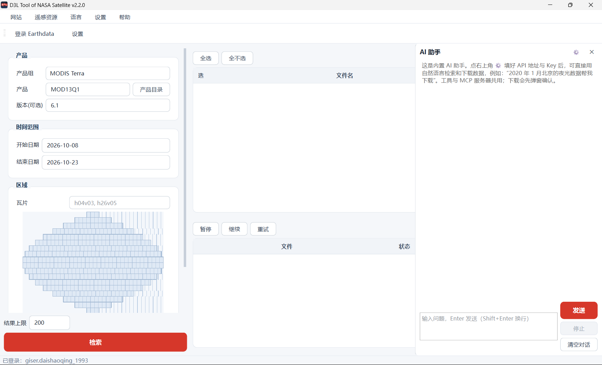
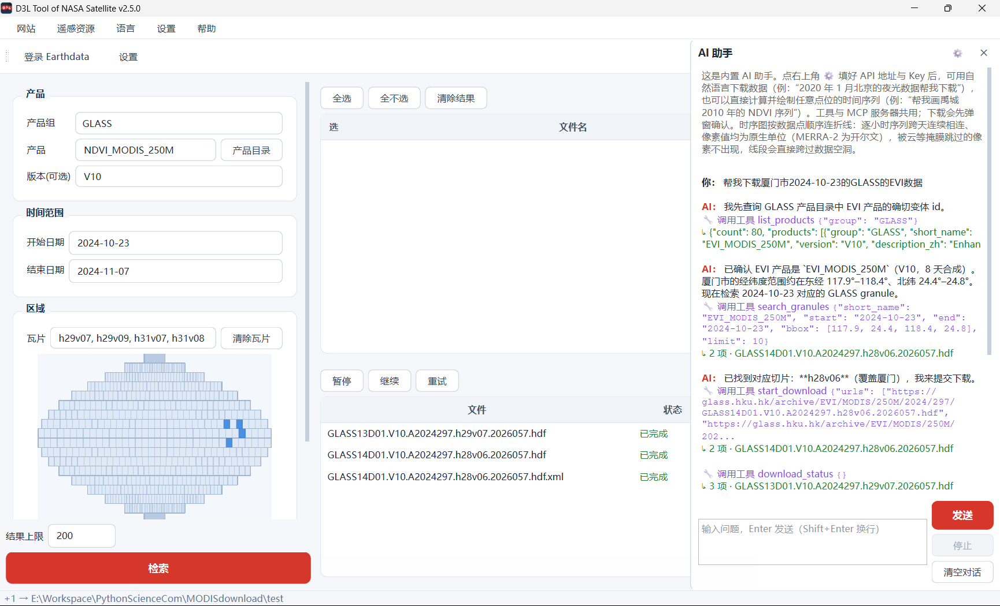

一个软件全搞定
内置检索
选好产品与时间，在 36×18 正弦瓦片地图上直接点选（也可输入经纬度 / 范围框）——不用再去 NASA 网站手工下单。
产品全覆盖
内置 MODIS、VIIRS（LAADS DAAC）、MERRA-2（GES DISC）产品目录，
任意 CMR short_name 也支持。
GLASS 档案
v2.5 新增：检索并下载 GLASS（Global Land Surface Satellite）
产品体系——公开 glass.hku.hk 档案的 130+ 个变体，
无需 Earthdata 登录。GLASS 引擎以作者的 R 包
glass.sqdaitools
v0.1.0（文档）为骨架：
D3L Tool 管找和下，后处理在 R 侧完成——配套使用。
稳定下载
多线程队列、分块进度、HTTP 断点续传、失败自动重试、文件大小校验， 弱网环境也可靠。
浏览器辅助下载
v2.4 新增：勾选的粒子可导出成一列 URL 的 .txt（
wget -i / aria2c -i / 下载管理器直喂）或
一键点的 .html 索引页——直连 401/403 卡住时的救援线，
让你已登录的浏览器会话代劳。
MCP 服务器 + AI 助手
自 v2.1 起，d3ltool-mcp 把 13 个工具（检索、瓦片换算、
时序采样、软件内绘图、下载控制、清单导出）暴露给 Claude Desktop、Claude
Code、Codex、Cursor、OpenCode、Qoder、ZCode
等 MCP 客户端，复用本机
已登录的凭据；软件内也有右缘滑出的 AI 助手抽屉，用自然语言驱动同一套
工具，取到序列还能直接画进时间序列抽屉。接入指南 →
点位时间序列
v2.3 新增：任选 MODIS/VIIRS 或 MERRA-2 变量，输入经纬度与日期 范围，经 NASA OPeNDAP 直采该像元序列并绘制折线，一键导出 CSV—— 不经任何第三方子集服务。
中英双语
菜单一键切换中文 / English。
跨平台 & 代理
Windows exe、macOS .app、Linux 二进制（CI 自动构建），或
pip install d3ltool；支持代理，适应复杂网络环境。
主界面一览


list_products 定变体、search_granules
按 bbox 检索、start_download 免登录下载；后续镶嵌/裁剪/
合成在 R 中用 glass.sqdaitools 完成。三步开始
检索
选产品、选时间，在地图上点出需要的瓦片，点 Search。
下载
勾选需要的文件加入队列，断点续传下载器会自动完成，失败还会重试。
安装与登录
Windows 双击 D3LToolNASA.exe 即可（单文件，无需安装
Python）；macOS .app 与 Linux 二进制在
GitHub
Releases，命令行用户直接 pip install d3ltool。在
“设置 → 登录 Earthdata”里用免费的
NASA Earthdata 账号登录——
检索无需登录，下载需要；凭据只保存在本机（~/.netrc）。
检索
左侧选产品组与产品（或“custom”输入任意 CMR short_name），
可选版本（留空取最新）与起止日期；区域可以直接在正弦瓦片地图上点选（可多选，
或输入 h04v03，或用经纬度定位），MERRA-2 这类数据也可输入范围框。
GLASS 组（v2.5）收录公开 glass.hku.hk 档案的 130+ 个变体——GLASS
检索全程不需要登录。点红色 Search 按钮，结果出现在右上表格。
下载
在结果表勾选文件，点“加入下载队列”。任务表实时显示每个文件的进度 与速度，可暂停/续传/重试；已完成文件重新下载时自动跳过，中断的自动续传。 下载目录、并发数与代理都在“设置”里。
浏览器辅助下载
某个下载反复失败（部分代理会被 401/403 拦）时，勾选对应行点
“导出下载清单”（“在浏览器打开”直接弹出 .html
索引页）：让你已登录的浏览器或 DownThemAll 类扩展去拉文件，.txt
清单也能喂给 wget -i / aria2c -i。MCP 工具
export_download_urls / open_download_page
给 AI 客户端同样的操作——密码不进聊天也不进 MCP 消息。
# 命令行
pip install d3ltool
d3ltool search VNP46A1 --start 2020-03-01 --end 2020-03-31 --tile h04v03
d3ltool download VNP46A1 --start 2020-03-01 --end 2020-03-31 --tile h04v03 --dest D:/data
d3ltool search M2T1NXSLV --start 2019-08-01 --end 2019-08-31 --bbox 100 20 120 40
d3ltool search LAI_MODIS_250M --start 2018-08-01 --end 2018-12-31 --tile h28v05 # GLASS，免登录
GLASS + R 后处理
GLASS 模块（v2.5）以作者的 R 包
glass.sqdaitools
v0.1.0（文档）为骨架——
两个项目配套使用：D3L Tool 负责产品检索与断点续传、大小校验的
批量下载（免登录，公开档案）；填充值/比例因子处理、多瓦片镶嵌、
重投影与时间合成在 R 中用 glass.sqdaitools 完成：
# R >= 4.1；重依赖 terra / sf
devtools::install_github("GISerDaiShaoqing/glass.sqdaitools")
glass.sqdaitools::glass_process(files, roi = my_roi,
product = "LAI_MODIS_250M",
fun = "mean", outfile = "lai_mean.tif")
版本兼容：D3L Tool 2.5.0 ↔ glass.sqdaitools ≥ 0.1.0（API 变更在 两边 release notes 同步声明）。GLASS 数据由 GLASS 产品团队 （glass.hku.hk）生产，使用请遵守 其引用政策。
时间序列
点开右缘的时间序列抽屉，选产品与图层，输入经纬度与起止日期， 点“绘制折线图”——该像元的序列经 NASA OPeNDAP 直采（MODIS/VIIRS 走 LAADS，MERRA-2 走 GES DISC，复用本机登录），实时绘成折线，一键导出 CSV； “清空图表”复位画面。大范围批量分析仍建议下载原始数据离线处理。
MCP 服务器与 AI 助手
d3ltool-mcp 通过 stdio 暴露 13 个工具（检索、瓦片换算、
时序采样、软件内绘图、下载控制、清单导出），接入 Claude Desktop、Claude
Code、Codex、Cursor、OpenCode、Qoder、ZCode 等
MCP 客户端；软件内右缘滑出的
AI 助手抽屉用自然语言驱动同一套工具。配置示例见
接入指南。
菜单
“网站”菜单收录项目官网、作者博客与 NASA 门户；“遥感资源”是精选的遥感 资源列表；“帮助”含打赏与关于；界面语言在“语言”菜单一键切换。
从 2018 到今天
D3L Tool 由戴博士创建于 2018 年（v1.0）——当时 LAADS FTP 服务器关停、官方 Python 脚本对非程序员 太不友好，v1 用浏览器模拟替用户自动下单。八年后技术栈全面更新，v2 基于 NASA 官方 earthaccess 库与 CMR 检索服务彻底重写。
依赖与致谢
D3L Tool of NASA Satellite 以 MIT 协议发布，构建在几个开源项目之上：
PySide6（Qt for Python）—— 跨平台 GUI 库，LGPL-3.0 · doc.qt.io/qtforpython
earthaccess —— NASA Earthdata 访问库，MIT · earthaccess.readthedocs.io
requests —— Apache 2.0 · requests.readthedocs.io
PyInstaller —— GPL · www.pyinstaller.org
v1.0（2018，浏览器模拟方案）基于 tkinter、selenium 与 Tristan Quaife 的 laads-data-download.py 构建，已停止维护并归档于仓库历史。
GLASS 数据由 GLASS 产品团队（glass.hku.hk） 生产，使用请遵守其引用政策；GLASS 模块（v2.5）移植自作者的 glass.sqdaitools R 包。
开发过程得到 Tristan Quaife、MorvanZhou 与 NASA 的帮助，特别感谢 GeoDa。
问题与反馈
- 使用问题 → 上方使用指南
- 缺陷与建议 → GitHub Issues
- 其它联系 → dsq1993qingge@163.com
D3L Tool of NASA Satellite 采用 MIT 协议发布。